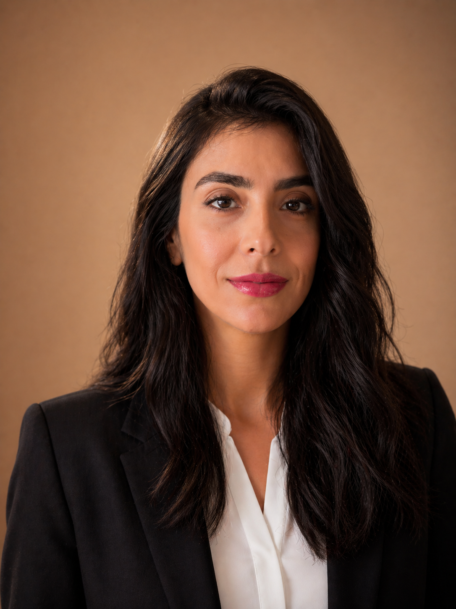

Negar Rezai's Portfolio
Negar Rezai's PortfolioNegar Rezai
Based in San DiegoDIGITAL DESIGNER
Creative Digital Designer with experience in website design,
email marketing, social media, and digital marketing assets.
I enjoy creating responsive, user-centered digital
experiences that combine creativity with strategy. Currently
pursuing the Digital Design & Creative Strategy program at
UC San Diego and seeking a Digital Designer opportunity
where I can contribute to meaningful projects while
continuing to grow as a designer.
